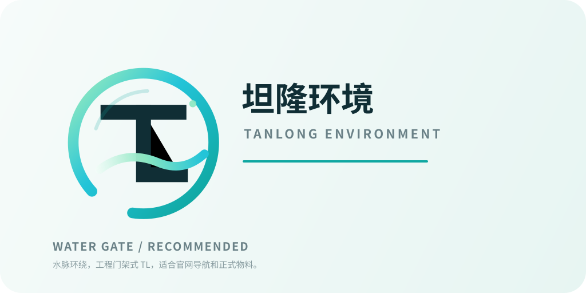
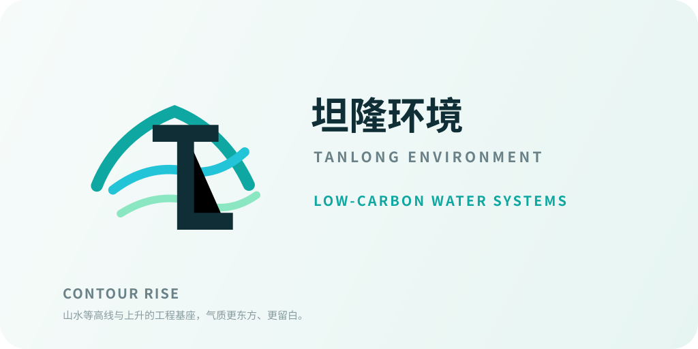
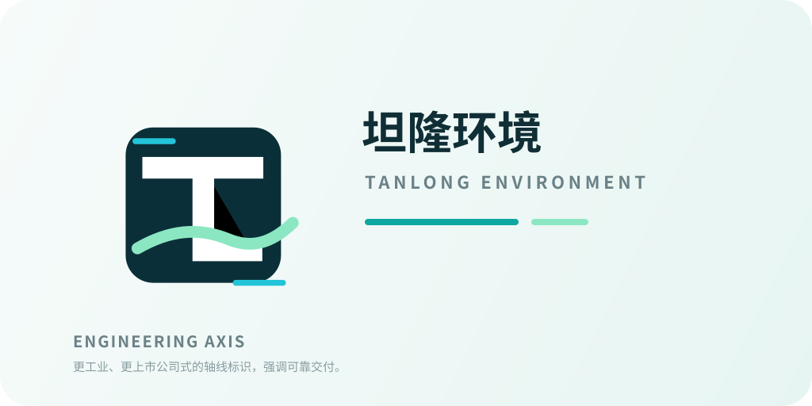
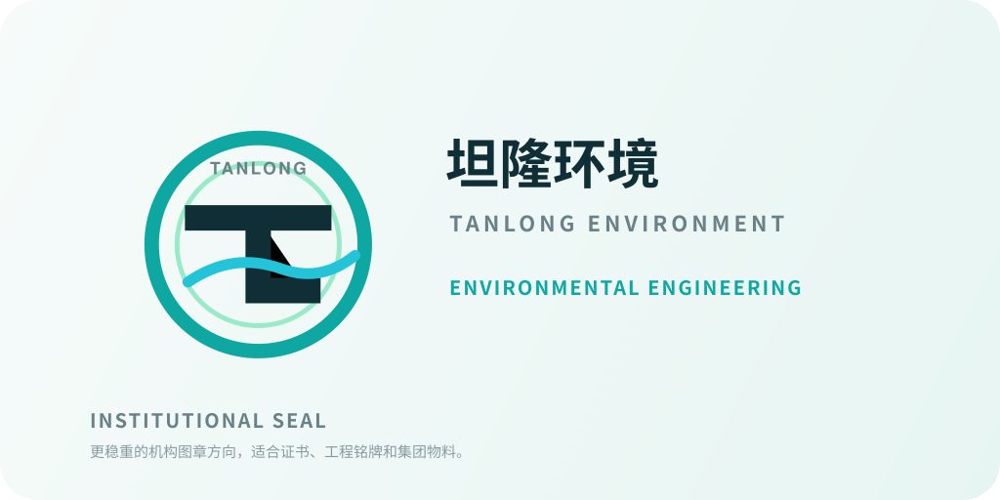

坦隆环境 Logo 方向
Logo refresh / 2026-07-03
减少装饰，保留水环境与工程交付的核心语义。
标识在官网首屏、favicon 和工程物料上都能成立。
颜色从亮蓝转为深水蓝、清透青绿和留白。

01 Water Gate
推荐用于官网。轮廓最稳，导航栏识别度最高。

02 Contour Rise
备选方向，用于比较气质和使用场景。

03 Engineering Axis
备选方向，用于比较气质和使用场景。

04 Institutional Seal
备选方向，用于比较气质和使用场景。
96px
64px
32px
16px